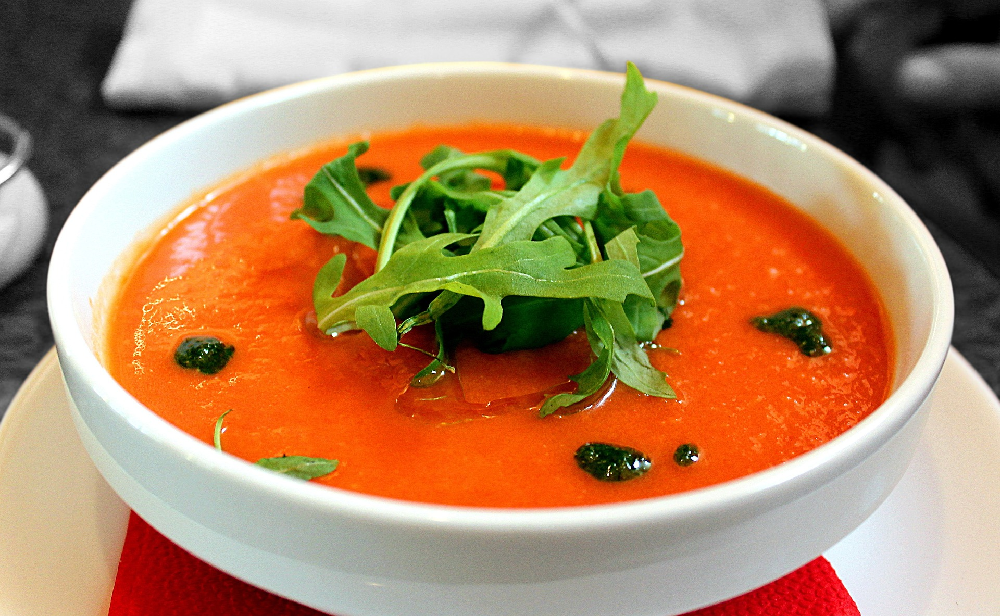

Receta gazpacho andaluz

Descripcion
El gazpachito esta rico en verano y punto
Ingredientes
- 1 kg de tomates
- 1 pepino
- 1/2 cebolla
- 1 ajo
<1i>1 pimento rojo
- Sal, aceite y vinagre
Pruses
- Se pelan los tomates, y todo y se echa en una olla
- Se bate todo
- Se anade sal, aceite y vinagre al gusto
- Un poquito de pan o mas agua fria si quieres